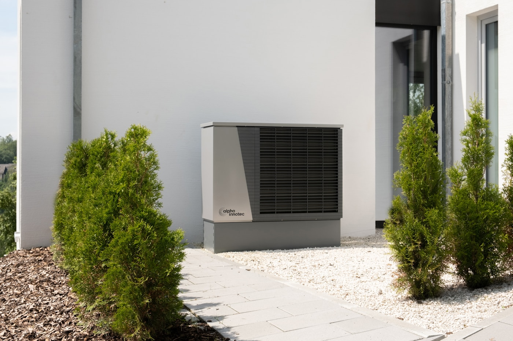

⌂
Gebäudeanalyse
Wir prüfen Fläche, Dämmung, Fenster, bisherigen Brennstoffverbrauch und den Warmwasserbedarf.
Zuerst berechnen wir den Energiebedarf und prüfen die Heizungsanlage. Anschließend wählen wir Gerät, Zubehör und Regelung aus – ohne Überdimensionierung.

Eine Wärmepumpe ist Teil eines Gesamtsystems. Deshalb analysieren wir auch die Zentralheizung, die Warmwasserbereitung, die Regelung und den Stromanschluss.
Wir prüfen Fläche, Dämmung, Fenster, bisherigen Brennstoffverbrauch und den Warmwasserbedarf.
Wir vergleichen Leistung, Betriebstemperatur, Geräuschpegel, Regelung und den erforderlichen Modernisierungsumfang.
Wir koordinieren Lieferung, hydraulische und elektrische Montage, Inbetriebnahme, Einweisung und Betreuung nach der Abnahme.
Entscheidend ist, wie das System im konkreten Haus arbeitet. Eine falsche Leistung oder eine zu hohe Vorlauftemperatur kann Kosten erhöhen und den Komfort mindern.
Ein fester Ansprechpartner begleitet das Projekt und erläutert alle technischen Entscheidungen.
Wir erfassen Angaben zu Gebäude, Rechnungen, bisheriger Wärmequelle und Erwartungen.
Wir berechnen den Bedarf, prüfen die Anlage und stellen vergleichbare Varianten vor.
Wir stimmen den Zeitplan ab, montieren die Geräte, führen Messungen und die Inbetriebnahme durch.
Wir weisen Sie ein, konfigurieren die Regelung und bleiben für Servicefragen erreichbar.
Ein verbindlicher Preis erfordert technische Daten. Die folgenden Angaben dienen als Ausgangspunkt.
Geräteauslegung, Standardzubehör, Montage, Inbetriebnahme und Einweisung.
Erweitert um notwendige hydraulische Arbeiten, Speicher, Puffer oder die Modernisierung von Heizkreisen.
Gemeinsame Planung von Heizung und Stromerzeugung mit der Möglichkeit, einen Batteriespeicher hinzuzufügen.
Die Preise sind unverbindliche Richtwerte für einen typischen Leistungsumfang und stellen kein rechtsverbindliches Angebot dar. Die Kosten hängen unter anderem von Leistung, Zubehör, Leitungswegen, Änderungen an der Heizungsanlage und den Montagebedingungen ab.
Zuerst prüfen wir die Bedingungen, danach geben wir eine konkrete Antwort.
Das ist möglich, erfordert aber eine Prüfung der Wärmeverluste, der Vorlauftemperatur und des Anlagenzustands. Manchmal lohnt sich zunächst eine teilweise energetische Sanierung.
Wir berücksichtigen Wärmebedarf, Dämmung, Wärmeverteilung, Warmwasserbereitung und örtliche Bedingungen. Die Fläche allein reicht nicht aus.
Ja, wenn Heizkörperleistung und Vorlauftemperatur den erforderlichen Komfort ermöglichen. Das prüfen wir vor der Geräteauswahl.
Ja. Wir prüfen aktuelle Programme und Fördervoraussetzungen und unterstützen bei den Unterlagen. Die Verfügbarkeit der Unterstützung bestätigen wir im Einzelfall.
Nennen Sie uns Fläche, bestehende Heizung und Standort. Wir melden uns mit technischen Rückfragen und dem nächsten Schritt.